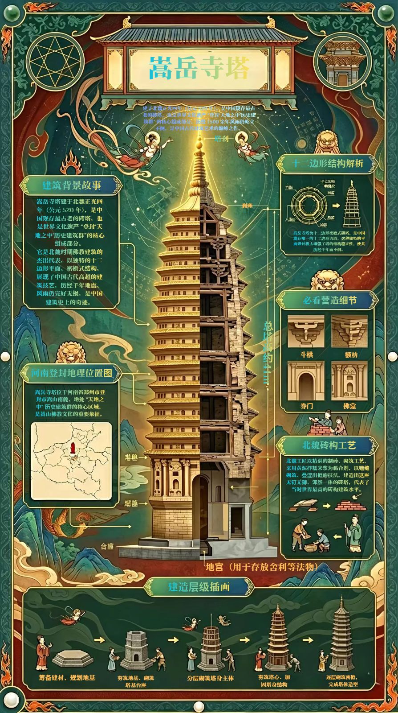

中国现存最古老的砖塔 · 唯一十二边形密檐式砖塔 · 北魏砖石建筑巅峰之作

北魏正光四年
密檐叠出
塔体高度
独特平面形制
塔层高度分布示意（底层→顶层递减）
千年传承 · 历史大事记
「 雁塔风霜古，龙池岁月深 」
— 嵩山古塔留题 · 距今逾1500年
嵩岳寺塔始建于北魏正光四年（公元523年），坐落于河南省登封市西北约6公里的嵩山南麓太室山脚下，原为北魏宣武帝为其父孝文帝祈求冥福而建造的皇家寺院——闲居寺内的佛塔。寺院在隋仁寿二年（602年）更名为嵩岳寺，塔亦随之改称嵩岳寺塔。
北魏时期正值佛教在中国大肆传播的鼎盛阶段，皇室大规模营建佛寺佛塔，嵩岳寺塔即为这一历史背景下的杰出代表作。它是我国现存最古老的砖塔，也是唯一一座十二边形平面的密檐式砖塔，具有极高的历史、科学和艺术价值，1961年被国务院公布为第一批全国重点文物保护单位。
塔体平面为独特的十二边形，是我国古塔中绝无仅有的形制。这种多边形平面使塔体在各个方向受力更加均匀，有效增强了结构的整体稳定性，也使塔体外观呈现出丰富的光影变化，具有极高的美学价值。
塔高37.05米，共十五层密檐。各层檐口均采用叠涩技法逐层向外挑出，形成柔和的抛物线轮廓。从下至上塔身直径逐层递减，底层最大，上部急剧收窄，整体造型轻盈秀美又不失雄浑气势。
塔体底部设有高大的须弥座式台基，以青石砌筑，分为上下两层，中部雕有壶门式装饰。台基不仅起到稳固承重的作用，也赋予塔体庄严稳重的气质，象征佛教宇宙观中的"世界之基"。
塔顶设塔刹，由覆钵、相轮七重、垂带、华盖和宝珠组成。相轮由粗渐细层层叠置，象征佛教修行的阶梯；宝盖宽大华丽，遮护塔顶；宝珠耸立塔尖，寓意佛光普照。
嵩岳寺塔的砖砌体采用黄胶泥拌糯米浆作为粘合剂，这是北魏时期最先进的砖石结构技术之一。糯米浆的加入使砂浆具有类似水泥的硬化特性，干燥后强度极高，耐久性远超普通泥土砂浆。这种配方在现代材料科学出现之前，代表了古代匠人对材料性质的深刻认识与精准掌控。
各层密檐采用叠涩技法砌筑，即逐层将砖向外挑出（每层挑出约15-20厘米），形成多层次的挑檐结构。这种做法无需木质斗拱支撑，纯靠砖块层层叠加的重量平衡维持稳定，既是结构构件，也是装饰构件，是我国古代砖构技艺的精髓所在。
叠涩层数规律：
底层出檐最深（4步叠涩），随高度增加出檐逐渐收窄，到顶层叠涩层数减少但出挑角度保持，整体形成优美的抛物线轮廓。
据地方志记载，嵩岳寺塔在1500年间至少经历了12次有记载的大地震，其中包括6级以上强震多次，塔体始终完好无损。其抗震机理在于：十二边形平面使各向刚度均匀；密檐结构层层卸力；糯米浆砂浆的高粘结力使砖块紧密嵌固；整体结构呈筒状，传力路径清晰。这种结构智慧远超同代建筑水平。